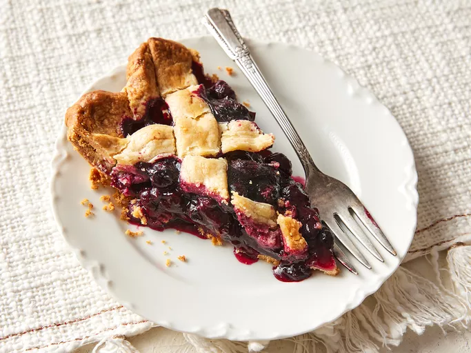

Homemade Blueberry Pie

A delicious pie that you can make by your own, using fresh ingredients and making with love, will make everyone love this recipe.
Ingredients:
- 3/4 cup white sugar
- 3 tablespoons cornstarch
- 1/2 teaspoon ground cinnamon
- 1/4 teaspoon salt
- 4 cups fresh blueberries
- 1 (14.1 ounce) package double-crust pie pastry, thawed
- 1 tablespoon butter
Steps:
- Take all ingredients and preheat the oven to 190 degrees C.
- Mix sugar, cornstarch, cinnamon, and salt together in a bowl; sprinkle over blueberries.
- Line a pie dish with one pie crust. Pour berry mixture into the crust and dot with butter.
Cut remaining pastry into 1/2 to 3/4 inch-wide strips. Use the strips to weave a lattice top.
Crimp and flute the edges.
- Bake pie on the lowest oven rack until filling is bubbling and crust is golden brown, about 50 minuts.
- Cut into slices and enjoy.